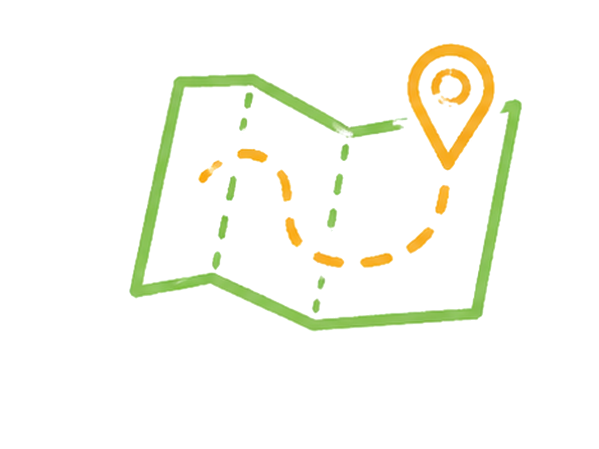

01定義資訊Define
定義目標與關鍵關係人
先確認關鍵關係人真正想要什麼，定義資訊與目標，而不是急著假設問題。
賦能重點：從「急著解題」→「先把問題定義清楚」
青年尋路 × 行動賦能
鄉育賦能學生面對升學、職涯、創業與人生選擇中的不確定，透過真實情境、專案式學習與行動設計，建立能反覆使用的判斷力、選擇力與實作力。
我們為什麼出發
這個時代給青年的選擇，比以往更多，也更模糊——升學、職涯、創業、跨域、地方參與，每一條路都攤在眼前，卻沒有人教他們怎麼判斷、怎麼選。
鄉育之所以存在，是相信每個青年都該有機會練出這份能力——而它不該因為家庭背景或所在地區的資源落差而被決定。

我們怎麼賦能
面對一個真實問題，鄉育用四階段循環賦能青年——走過定義、重組、設計到行動，把「不知道怎麼開始」，一步步變成「我可以自己推進」。完整方法在計畫頁，這裡先看它怎麼運轉。
以面對未知、定義問題與重組資訊，作為賦能的起點。
四階段賦能方法 · Process
鄉育的賦能核心是 PM 管理能力：管理問題、方案與推進。
01定義資訊Define
定義目標與關鍵關係人
先確認關鍵關係人真正想要什麼，定義資訊與目標，而不是急著假設問題。
賦能重點：從「急著解題」→「先把問題定義清楚」
02重組資訊Reorganize
釐清真正的問題
重新整理資訊，分辨表面說法與真正需求，找出真正要解決的問題。
賦能重點：從「拿到資訊就動手」→「能重組資訊」
03設計行動Design
設計可執行的方案
把釐清後的需求，轉化為量身打造、可被執行的行動方案。
賦能重點：從「知道方向」→「知道怎麼做」
04落地迭代Practice／Iterate
執行並循環修正
在執行中產生新問題，循環回到定義、重組與設計，持續迭代。
賦能重點：從「完成任務」→「能持續迭代的行動力」
四階段循環不斷推進，最終長成可被看見的成果。
鄉育為學生賦能，每一次迭代，都讓青年更能面對未知、定義並推進行動。
改變正在發生
我們在意的不是學生完成一堂課，而是他能不能在下一個真實情境裡，繼續用上這些能力——這些累積，正在變成看得見的數字。
你在這條路的哪裡
鄉育需要的不只是課程，也是一個讓青年接觸真實世界的支持網絡。不同角色，都能用自己的方式參與其中。
合作夥伴
從大專院校、高中到企業，鄉育的影響力來自一群共同支持青年尋路的學校與夥伴——他們提供場域、導師、資源與真實情境，讓能力得以在現場被練習與驗證。
合作學校與夥伴
每一份支持，都讓更多沒有資源的青年，有機會練習面對真實世界的判斷力與行動力。立即支持鄉育，成為他們路上的一盞燈。